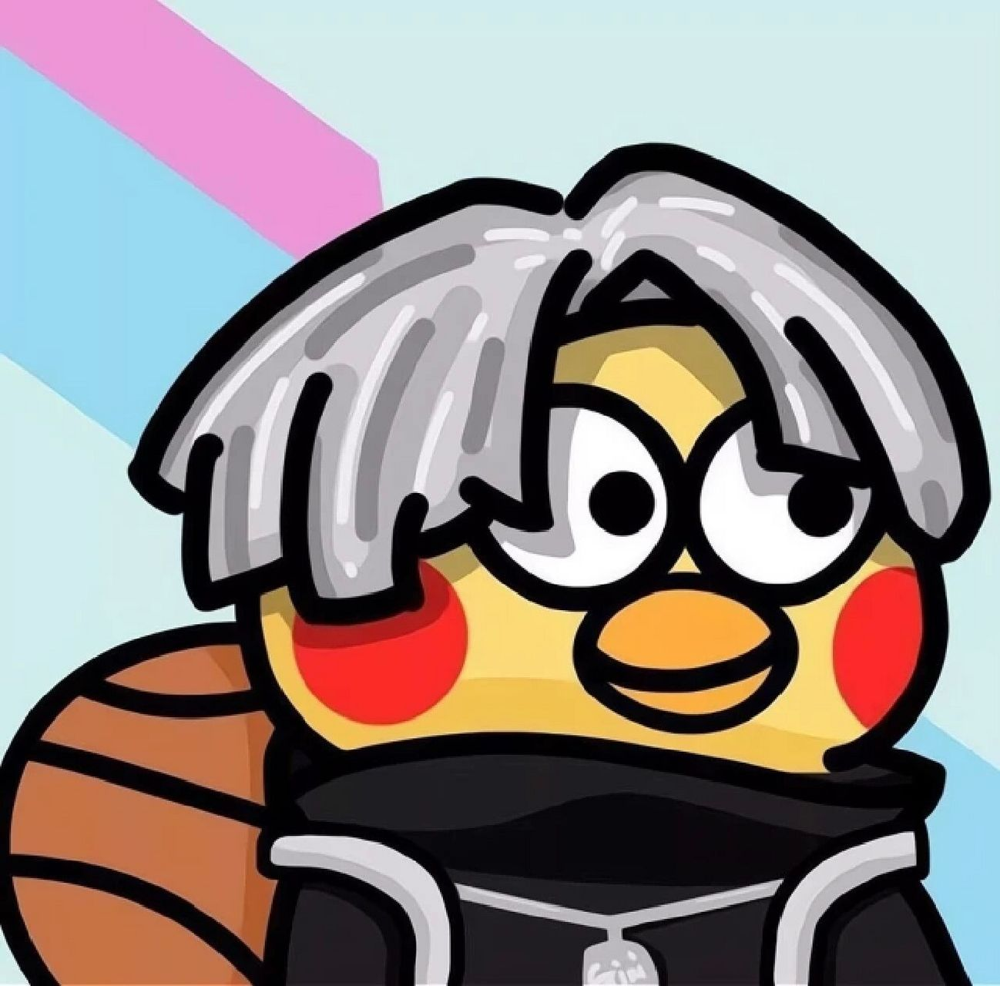
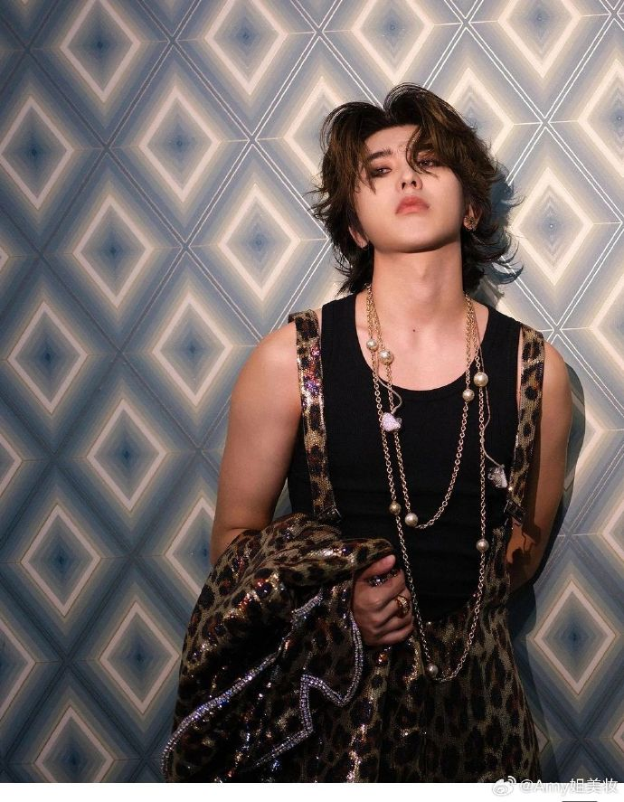

| ——只有坤坤 |
|---|
| 来时路 | 成顶流 | 不忘初心 | we are ikun |
|---|

蔡徐坤（KUN），1998年8月2日出生于浙江省温州市，户籍湖南省吉首市， 中国内地男歌手、演员、原创音乐制作人、 MV导演。 2012年8月，蔡徐坤参演的偶像剧《童话二分之一》播出，由此开始步入大众视线。2018年1月，参加竞演类综艺节目《偶像练习生》并以总票数第一正式出道，成为限定男团NINE PERCENT队长； 8月，发行首张EP《1》，获2018亚洲新歌榜年度盛典最受欢迎潜力男歌手奖； 随后，他还发行原创单曲《Wait Wait Wait》，并携手格莱美奖最佳MV获奖导演戴夫·迈尔斯打造歌曲MV。2019年1月，被授予“中牙友好大使暨中牙杰出青年领袖人物”称号；3月，成功开启横跨三个国家、六座城市的海外公演《ONE》； 7月，发行首张数字专辑《YOUNG》； 10月，携手中国儿童少年基金会共同设立“葵计划爱心基金”。 2020年3月，加盟《青春有你第二季》担任青春制作人代表； 4月9日，原创公益歌曲《Home》全网上线； 随后，加盟户外竞技真人秀《奔跑吧第四季》担任常驻MC； 7月，获第27届东方风云榜最佳男歌手等三个奖项。2021年1月，获得第二届TMEA腾讯音乐娱乐盛典年度最具影响力唱作歌手和年度最具号召力歌手两个奖项，单曲《情人》获得年度十大金曲奖；4月13日，发行个人创作专辑《迷》； 7月17日，于北京凯迪拉克中心举办首场个人巡回演唱会，同年获第三届TMEA腾讯音乐娱乐盛典年度最具影响力制作人等多项荣誉。 2023年1月24日，参加《奋进新征程——2023中国网络视听年度盛典》，演唱歌曲《默片》。
生平事迹
1998年8月2日 出生 1998年8月2日，蔡徐坤出生于浙江温州。 2012年 首次出演电视剧 2012年8月，蔡徐坤参演的偶像剧《童话二分之一》播出，他开始步入大众视线。 2015年 首次参加青春励志综艺节目 2015年10月13日，星动亚洲十五强发布新曲《TOP NOW》 2018年1月 正式出道 2018年1月，蔡徐坤参加竞演类综艺节目《偶像练习生》，并于同年4月6日以第一名的成绩正式出道。 2018年8月 发行首张EP音乐作品 2018年8月2日，蔡徐坤担任EP制作人发行了个人的首张EP《1》，随后，EP里的《Pull Up》获得Billboard Radio China年度十大华语金曲奖 2019年1月 担任北京电视台春节联欢晚会的代言人。 2019年1月，蔡徐坤作为新生力量代表担任北京电视台春节联欢晚会的代言人。 2019年7月 发行首张数专音乐作品 2019年7月26日，发行首张数字专辑《YOUNG》，该专辑打破多项记录。 2019年10月 成立葵计划爱心基金 2019年10月17日，中国儿童少年基金会携手蔡徐坤共同设立“葵计划爱心基金”，他首期捐赠63万元善款。2020年8月2日，捐赠82万元助力葵计划公益合唱训练营等公益项目，截至2022年3月已带动粉丝为葵计划累计捐款460余万元。 2020年3月 担任青春制作人代表 2020年3月，加盟《青春有你第二季》，担任青春制作人代表。 2020年3月 抗疫歌曲《山河无恙在我胸》MV发布 2020年3月，致敬抗疫英雄公益歌曲《山河无恙在我胸》MV发布，该歌曲获得2020咪咕音乐公益影响力奖项。 2020年4月9日 原创公益歌曲《Home》上线 2020年4月9日，蔡徐坤为抗疫创作公益歌曲《Home》，歌曲通过钢琴与童声的结合将祝福与温暖传递。 2020年4月24日 加入《奔跑吧》成为常驻嘉宾 2020年4月24日起，蔡徐坤连续三年加入户外竞技真人秀《奔跑吧》并担任常驻嘉宾。 2020年5月 发布的原创单曲《情人》掀起热潮 2020年5月24日，发布原创单曲《情人》，该曲刷新了15项音乐榜单冠军，随后他还获得第27届东方风云榜最佳男歌手、亚洲人气歌手及网络影响力三个奖项。 2020年12月 音乐盛典咪咕汇收获多个奖项 2020年12月26日，蔡徐坤在第十四届音乐盛典咪咕汇获得年度内地最佳男歌手、年度内地最受欢迎男歌手及年度最佳人气男歌手三个奖项，同时，单曲《情人》也获得了年度十大金曲奖。 2021年1月 TMEA腾讯音乐娱乐盛典持续发力 2021年1月23日，蔡徐坤在第二届TMEA腾讯音乐娱乐盛典上获得年度最具影响力唱作歌手和年度最具号召力歌手两个奖项，单曲《情人》获年度十大金曲奖。12月11日，第三届TMEA腾讯音乐娱乐盛典获得年度最具影响力制作人，歌曲《感受她》获得年度十大金曲奖。 2021年4月 发行个人原创专辑《迷》 2021年4月13日，蔡徐坤以原创音乐制作人身份发行个人创作专辑《迷》，他不仅参与专辑词曲创作和编曲制作，还先后担任《迷》MV编剧和《感受她》MV导演。 2021年7月 首次举办个人巡回演唱会 2021年7月17日，于北京凯迪拉克中心举办首场个人巡回演唱会。 2022年1月 被评为2021年度面孔 2022年1月，蔡徐坤被《人物》杂志评选为2021年度面孔登上一月刊封面。